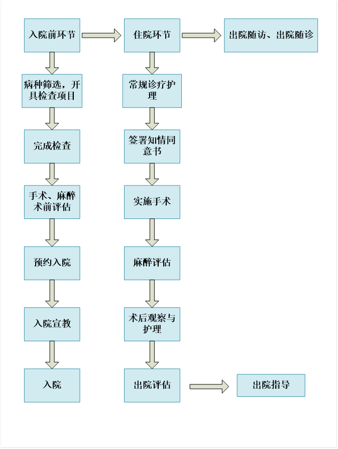
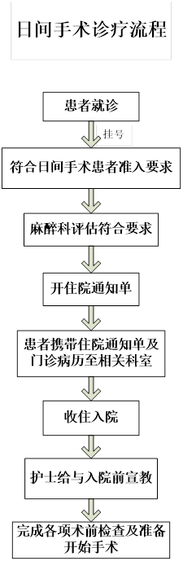
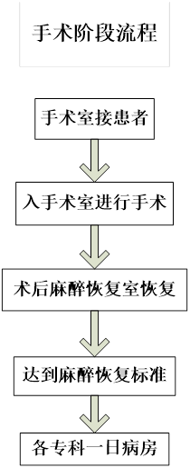
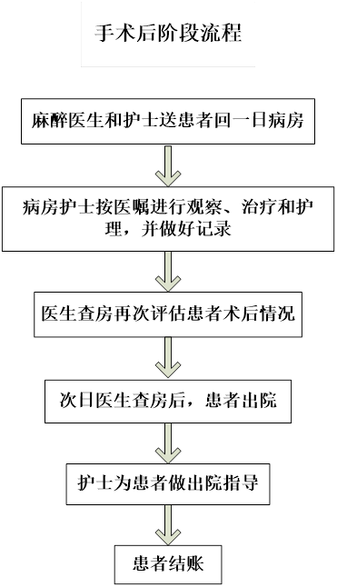
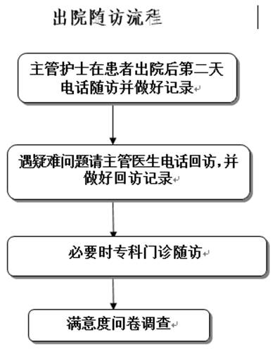
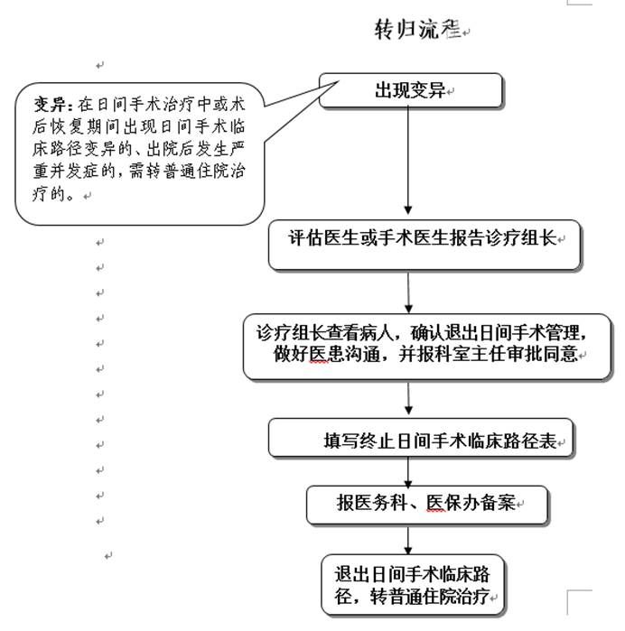

日间手术流程管理
（一）入院前管理流程：
患者持诊疗卡在门诊就诊后，专科医生进行病种筛选，开具相应检查项目；根据患者相关检查的基本情况完成手术、麻醉术前评估，符合条件的患者如同意进行日间手术治疗，由专科医生进行登记预约；完成入院前宣教，包括通识教育、健康教育、心理疏导、饮食指导、用药指导及手术注意事项的强化；再确认手术日期，并通知患者入院。
（二）住院管理流程：
患者根据预约时间至各专科病房办理正式住院手续，责任医生和责任护士审核患者身份。入院后完成常规诊疗护理，签署知情同意书等相关医疗文书，如遇特殊情况患者不能如期进行手术治疗的，病房责任医生和护士应及时通知相关科室，保证日间手术有序、高效的完成。患者在专科病房完成术前准备，术后由麻醉医师决定是否送麻醉恢复室，达到麻醉恢复标准后送回病房；做好术后病情观察与护理；
（三）特殊转归流程
患者在入院前评估确认不能进行日间手术治疗的、在日间手术治疗中或术后恢复期间出现日间手术临床路径变异的、出院后出院严重变发症的，需转普通住院治疗或延长出院的，由手术医师评估并病程记录详细记录后，转普通住院治疗。
日间手术患者管理流程

以上流程中，任何环节出现意外或变异，可退出该路径，转入常规住院治疗
日间手术诊疗流程

手术阶段流程



